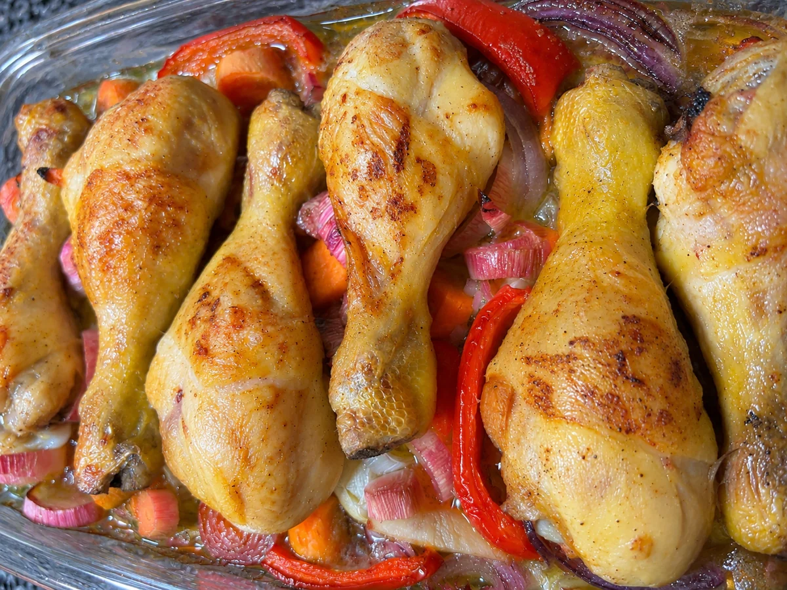

Muslitos de pollo al horno a la cerveza con verduras
Pollo dorado al horno sobre una cama de patatas, cebolla morada, puerro, zanahoria y pimiento rojo, con cerveza para aportar sabor al jugo de cocción.
- Preparación
- Cortar y aliñar
- Asado
- 1 hora a 180 °C
- Horno
- 180 °C
- Cantidad
- Según comensales

Ingredientes
Cantidades al gusto, según comensales
Marca lo que ya tienes.
Necesitarás una fuente apta para horno. La receta original no especifica cantidades exactas ni número de raciones.
Cómo hacer muslitos de pollo al horno con cerveza
- Preparar las verduras. Lava y corta las patatas, la cebolla morada, el puerro, la zanahoria y el pimiento rojo. Colócalos en una fuente apta para horno y añade los dientes de ajo enteros.
- Aliñar la base. Riega las verduras con aceite de oliva virgen extra, añade sal y pimienta y remueve para repartir bien el aliño.
- Colocar el pollo. Salpimienta los muslitos, úntalos con un poco de aceite de oliva virgen extra y colócalos encima de las verduras.
- Añadir la cerveza. Vierte un buen chorro de cerveza en la bandeja, alrededor del pollo.
- Hornear. Introduce la bandeja en el horno a 180 °C y cocina durante aproximadamente 1 hora, hasta que el pollo esté completamente hecho y las verduras tiernas.
UN POCO DE OFICIO
Consejos para que salgan bien
Pollo bien cocinado
El tiempo de una hora es orientativo. Comprueba la cocción junto al hueso; si utilizas termómetro, el centro debe alcanzar al menos 74 °C.
Verduras tiernas
Corta las patatas y las verduras en trozos de tamaño parecido para que se cocinen de forma uniforme.
El jugo de la bandeja
La cerveza se añade alrededor del pollo, sobre la base de verduras. Ajusta la cantidad al tamaño de la fuente para que los ingredientes se asen sin quedar sumergidos.
MÁS SOBRE ESTA RECETA
↑ Volver a la recetaPollo al horno con cerveza y verduras: una comida fácil de preparar
Hay recetas que permiten tener una comida completa con una sola bandeja. Estos muslitos de pollo al horno se preparan sobre una base de patata y verduras, con aceite de oliva, ajo y un buen chorro de cerveza. Una vez montada la fuente, el horno se encarga del resto.
Una bandeja para toda la comida
La patata, la cebolla morada, el puerro, la zanahoria y el pimiento rojo acompañan al pollo desde el principio. Se cortan, se aliñan y se colocan en la misma fuente: así absorben parte del jugo de cocción y sirven como guarnición sin preparar otra sartén.
Qué aporta la cerveza
La cerveza se incorpora alrededor de los muslitos antes de hornear. Aporta líquido y sabor al fondo de la bandeja, que se mezcla con el aceite y los jugos del pollo y las verduras. La receta original no fija una cantidad exacta: basta con un buen chorro adaptado a la fuente.
Cómo saber cuándo está listo
La referencia es una hora de horno a 180 °C, pero el tamaño de los muslitos y el funcionamiento del horno pueden cambiar el tiempo real. Antes de servir, comprueba que la carne esté completamente cocinada y que las patatas estén tiernas. Para mayor seguridad, mide 74 °C en la parte más gruesa sin tocar el hueso.
Opiniones sobre esta receta
Consultando valoraciones…